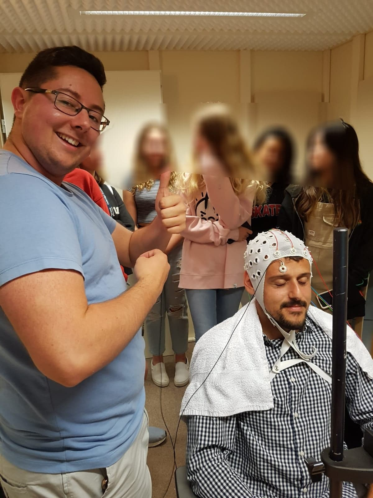

Current Occupation: Research Assistant
University of Oxford -October 2018 – September 2019 – MSc Psychological Research
Final grade: Merit
Bangor University - September 2015 – June 2018 – BSc Psychology with Neuropsychology
Final grade: First Class Honours Achievements: - Rank 1 (top of year) student in 2016/17 – Awarded the Tim Miles Prize for Best Overall Second Year Psychology Student - Highly ranked all three years of my BSc, including rank 1 semester 1 of final year - Awarded the final year Kevin Larkin Prize for School Citizenship for the most Outstanding Contribution to Psychology Student Life - Awarded Head and Senior Peer guide positions
July 2019 – July 2020 – Research Assistant
“Visual Attention After Stroke”
Supervising team (no order): Prof. Nele Demeyere, Prof. Jason Mattingly, Prof. Mark Belgrove, Dr. Meadhbh Brosnan.
The project is an international collaboration on EEG markers of visual attention, teasing apart motor, attention, arousal, and sensory issues related to vision. The study runs in 3 sites, Melbourne, Dublin and Oxford, and I am solely responsible for all aspects of patient recruitment, data recording, and data curation at Oxford.

October 2018 – September 2019 – MSc Research Project; Translational Neuropsychology
“Multiverse Analysis: An Examination of Outcome Fragility in Validating Executive Functioning Tests”
Supervisor: Prof. Nele Demeyere.
The written project is pre-registered, partially validating the Oxford Digital Multiple Errands Test against a neuropsychological battery in 96 participants. I used multiverse analysis to explore my own researcher degrees of freedom. All code and data are available on my OSF.
June 2017 – July 2018 – BSc Research Project; Kornysheva Lab researcher
“Effects of Alternating Training on Sequence Knowledge, Spatio-Temporal Transfer, and Inter-Manual Transfer”
Supervisor: Dr Katja Kornysheva.
This project involved behavioural data collection over 3 consecutive days for each of the 37 participants examining the effect of differing training regimes of sequential skill acquisition.
January 2018 – June 2018 – Internship: CEAR lab
I worked with Dr Mihela Erjavec, and Dr Marcano-Olivier to deliver an intervention into primary schools to increase consumption of fruit and vegetables. This involved intensive day long data collection in primary schools within a team coordinating separate but dependent roles.
November 2017 – December 2017 – Research Assistant: EEG in primary schools
I was a research assistant for Dr Lena Wimmer, a visiting researcher from Germany, who investigated the effects of mindfulness in children. This involved driving to schools, setting up EEG equipment, working with 6-11-year-old children, and collecting EEG data.
August 2017 – October 2017 – Research Assistant: Eye tracking and autistic traits
I worked with a PhD student in the SoBa lab under Professor Emily Cross, using eye tracking equipment and assessing participants autistic traits via questionnaire.
June 2017 – July 2017 – Internship: EEG and bilingualism
Internship with Professor Guillaume Thierry in the BULET lab for 8 weeks Here I with a PhD student on EEG data collection in an experimental perception paradigm, and a master’s student for behavioural data collection.
March 2016 – July 2016 – Shadowing/Aiding with fMRI /fMRS data collection
I started off with a voluntary shadowing opportunity in Dr Paul Mullins’ lab I learned how to conduct experiments whilst also solidifying my knowledge of the central nervous system. This became shadowing and assisting on an fMRI project with a PhD student with a participant population of aged 65+. I gained Level 1 neuroimaging experience for MRI.
R: Proficient for data cleaning, manipulation, analysis, and reporting.
MATLAB: Proficient for data collection, cleaning and manipulation
Inferential Statistics 7-week course, by Dr Daniël Lakens: 88.30 % - October 2018
NHS Good Clinical Practice: Research Integrity training: 95% - Certificate available